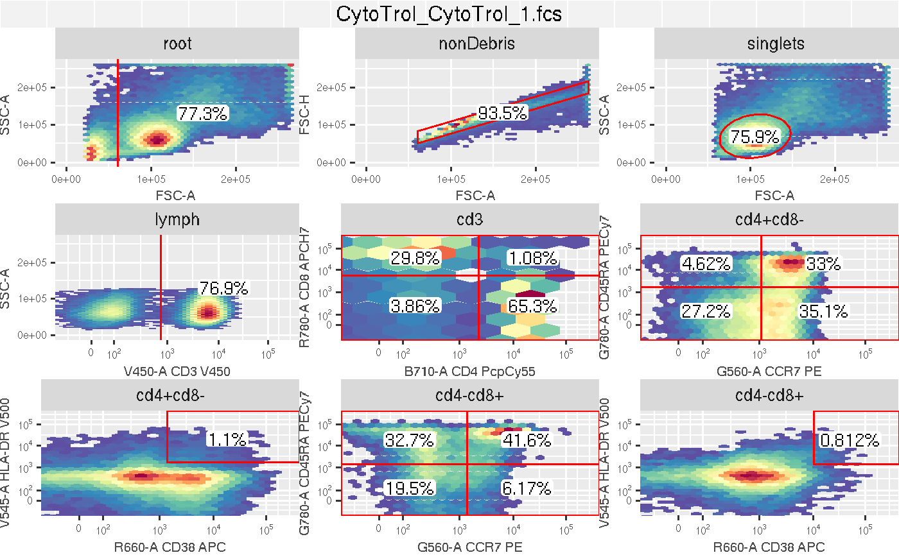
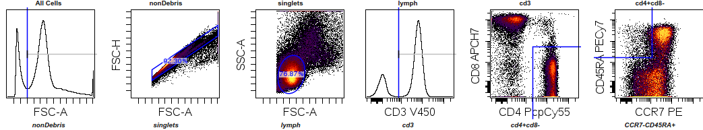
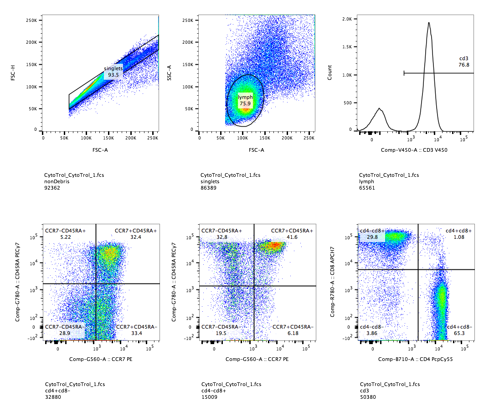

vignettes/HowToExportGatingSet.Rmd
HowToExportGatingSet.RmdA GatingSet object can be exported as a GatingML file or GatingML-based wsp flowJo workspace (version 10) so that they can be loaded into Cytobank or flowJo.
The GatingSet to be exported can be either parsed from Cytobank or flowJo or created by automated gating algorithms from openCtyo. Here we will demontrate the latter.
library(ncdfFlow) library(flowWorkspace) library(CytoML) dataDir <- system.file("extdata",package="flowWorkspaceData") #load raw FCS fs <- load_cytoset_from_fcs(file.path(dataDir,"CytoTrol_CytoTrol_1.fcs")) gs <- GatingSet(fs)
#compensate comp <- spillover(fs[[1]])[["SPILL"]] chnls <- colnames(comp) comp <- compensation(comp) gs <- compensate(gs, comp) #transform trans <- flowjo_biexp_trans() trans <- transformerList(chnls, trans) gs <- transform(gs, trans)
Note that the compensation and transformation must be applied directly to GatingSet instead of flowSet/ncdfFlowSet so that these information will be stored in the GatingSet object and exported to gatingML eventually.
library(openCyto) #load the original template for tcell panel tbl <- data.table::fread(system.file("extdata/gating_template/tcell.csv", package = "openCyto")) #modify some paramters to fit the current data range tbl[5, gating_args:= "gate_range = c(1e3, 3e3)"] tbl[c(8,11), gating_args:= "gate_range = c(2e3, 3e3)"] #write the new template to disc gtFile <- tempfile() write.csv(tbl, file = gtFile) ##reload the new template gt <- gatingTemplate(gtFile, autostart = 1L) #run the gating gating(gt, gs) #hide the gates that are not of interest toggle.helperGates(gt, gs) #visualize the gates library(ggcyto) autoplot(gs[[1]])

outFile <- tempfile(fileext = ".xml") gatingset_to_cytobank(gs, outFile)
## [1] "/tmp/Rtmp4J3aR5/file2995d9ad07.xml"Note that the resulted xml file is a standard GatingML2.0 file with some additional custom_info added so that it can be recognized by Cytobank. Here is the example gate plot from Cytobank after the gatingML is imported. 
outFile <- tempfile(fileext = ".wsp") gatingset_to_flowjo(gs, outFile)
The resutled wsp file is a XML-based flowJo workspace and can be loaded into flowJo(V10) along with orginal FCS files.Here is the gate plots from flowJo after it is imported. 